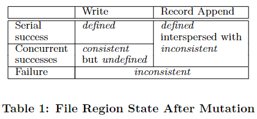

6.824 的第一篇论文是 Google “三驾马车”之一的 GFS(Google File System)——一个用于大型分布式数据密集型应用程序的可扩展分布式文件系统。
问题的提出背景
- 系统时常发生组件故障，其成因有许多：应用程序故障、操作系统故障、人为因素等。因此系统需要一定的持续监控、错误检测、容错和自动恢复能力。
- 多 GB 文件很常见，然而传统系统在管理海量小文件时显得比较笨拙，必须重新对 I/O 操作和文件块大小等进行参数的设计。
- 大多数文件是通过追加(append)新数据而不是重写(overwrite)现有数据来改变的，不存在对文件的随机写入。一旦写入，文件就只能被读取，而且通常只能按顺序读取。这与在客户端(client)缓存数据块相性不合。
- 统一应用程序和文件系统的 API 能够增加系统的灵活性。放宽 GFS 的一致性模型以极大地简化文件系统，而不会给应用程序带来繁重的负担。
设计总览
系统的应用场景假设
- 该系统由许多经常发生故障的廉价商品组件构建而成。它必须不断地自我监控，并定期检测、容忍组件故障并迅速从组件故障中恢复。
- 系统应有效管理大文件存储。同时必须支持小文件，但不需要针对它们进行优化。
- 工作负载主要包括两种读取：大型流式读取和小型随机读取。在大型流式读取中，单个操作通常读取数百 KB，更常见的是 1 MB 或更多。来自同一 client 的连续操作通常会读取文件的连续区域；小型随机读取通常会在某个任意偏移量处读取几个 KB，注重性能的应用程序经常对这些小读取进行批处理和排序，以稳定地遍历文件而不是来回移动。
- 系统必须为多个 client 同时对同一文件进行 append 定义良好的语义。我们的文件通常使用生产者-消费者队列或多路合并。可能同时会有数百个生产者将数据追加到一个文件中，故具有最小同步开销的原子性是必不可少的。
- 高持续带宽比低延迟更重要。大多数目标应用程序都非常重视以高速率批量处理数据，而少数目标应用程序对单个读取或写入具有严格的响应时间要求。
接口
GFS 提供并支持常规的文件系统接口：create、delete、open、close、read 和 write （尽管它没有实现诸如 POSIX 之类的标准 API），且文件在目录中分层组织由路径名标识。
此外，GFS 具有快照(snapshot)和记录追加(record append)操作。snapshot 以低成本创建文件或目录树的副本。record append 允许多个 client 同时向同一个文件追加数据，并保证每个 client 追加的原子性，而无需额外的锁策略。
系统结构
GFS 集群(cluster)由单个主服务器(master server)和多个块服务器(chunk server)组成，并由多个 client 访问。其中每一个 client 通常都是运行用户级服务器进程的 Linux 机器。
只要机器资源允许，并能够容忍由于运行可能不稳定的应用程序代码而导致较低的可靠性，也可以在同一台机器上同时运行 chunk server 和 client。
GFS 将文件分成固定大小的块(chunk)，并以 Linux 文件的形式存放在多个 chunk server 的本地磁盘上。
这样读写操作自然就会变得很快。因为可以从多个服务器上同时读取同一个文件，进而获得更高的聚合吞吐量。将文件分割存储还可以在存储系统中保存比单个磁盘还要大的文件。
每个 chunk 由 master 在创建时分配的不变且全局唯一的 64 位块句柄(chunk handle)标识。chunk server 读取或写入由 chunk handle 和字节范围指定的 chunk data。每个 chunk 都在多个 chunk server 上复制以实现可靠性。
默认存储三个副本，尽管用户可以为文件命名空间的不同区域指定不同的复制级别。
client 实现文件系统 API，并与 master 和 chunk server 通信来读取或写入数据。client 与 master 交互进行元数据操作，但所有承载数据的通信都直接进入 chunk server。以一次读文件操作为例：
- client 向 master 发出文件请求，该请求包含了 file name 与操作范围在文件中的偏移量 offset。
- master 在 table 中寻找 file name 到 chunk ID 的映射（一个 file 对应若干 chunk）。
- 之后，master 再根据 offset % chunk size = chunk index 找到对应的 chunk，向 client 发回 chunk handle 和 chunk location。
- client 收到回复后，根据 chunk location 寻找 chunk server，使用 chunk handle 进行文件操作。
client 和 chunk server 都不缓存文件数据。大多数应用程序要么工作集太大，要么通过大文件流式传输，client 无法缓存。chunk server 不需要缓存文件数据，因为 chunk 存储为本地文件，Linux 的缓冲区缓存已经将频繁访问的数据保存在内存中。
但 client 会缓存元数据，也会缓存一定的 chunk server 信息，以避免与 master 的重复交互。
块大小(chunk size)
论文中选取的是 64 MB，并且仅在需要时进行扩展。其优势如下：
减少了 client 与 master 的交互次数，对同一个 chunk 的读取和写入只需要向 master 发出一个初始请求以获取 chunk location。
这对于那些主要是按顺序读取和写入大文件的应用程序而言很有帮助。即使对于小的随机读取，client 也可以轻松地缓存多 TB 工作集的所有 chunk location。
当增大 chunk size 时，client 更有可能将操作集中在同一 chunk 上，从而可以通过在较长时间内保持与 chunk server 的持久 TCP 连接来减少网络开销。
它减少了存储在 master 上的元数据的大小（chunk size 越小，同一 file name 映射到的 chunk set 容量也会越大），这允许我们将元数据保存在内存中。
另一方面，如果许多 client 访问同一个文件，存储其 chunk 的 chunk server 可能会成为热点(hotspot)。
现实中，hotspot 并不是一个主要问题，因为应用程序大多是按顺序读取大型多块文件。而当批处理队列系统使用 GFS 时，出现 hotspot 的问题：少数 chunk server 被数百个 client 同时请求，从而超载。可以通过以更高的复制因子存储此类文件，或者使批处理队列系统错开应用程序启动时间来解决此问题。另一个长期解决方案是允许 client 在这种情况下从其他 client 中读取数据。
元数据(metadata)
master 维护以下三种类型的 metadata：命名空间、从 file name 到 chunk ID 的映射以及 chunk 的当前位置(chunk location)。所有 metadata 都保存在 master 的内存中。前两种类型（名称和文件到块的映射）也通过将操作记录(operation log)存储到 master 的本地磁盘上并在远程机器上复制 log 来保证持久性。
使用 log 可以简单、可靠地更新 master 状态，并且不会在 master 崩溃时遭遇不一致的风险。
由于 metadata 存储在内存中，master 能实现很快的操作速度。而这种存储策略的一个潜在问题是，chunk 的数量以及整个系统的容量受到 master 内存大小的限制（然而这并不是一个严重的瓶颈）。master 为每个 64 MB chunk 维护少于 64 B 的 metadata。大多数 chunk 已满，只有最后一个可能未被完全使用。同样，每个文件的命名空间数据通常需要少于 64 B，因为它使用前缀压缩技术存储文件名。
如果需要支持更大的文件系统，则需要向 master 添加额外内存，这与获得的好处相比代价非常小。
块位置(chunk location)
master 不会将哪些 chunk server 具有给定 chunk 的副本这一信息给持久化存储，而是在启动时轮询 chunk server 以获取该信息，之后定期通过 HeartBeat 请求数据，这使得 master 始终保持自己处于最新状态，且消除了在 chunk server 加入和离开集群、修改名称、失败、重新启动等时保持 master 和 chunk server 同步的问题——这要比将数据持久化到本地磁盘简单得多。
在拥有大量服务器的集群中，这些事件经常发生。
另一种理解思路是，chunk server 对它在本地磁盘上拥有哪些 chunk 拥有最终决定权。尝试在 master 上持久化此信息没有意义，因为 chunk server 上的一些故障可能会导致 chunk 失效（e.g，磁盘可能会损坏并被禁用）或者 chunk server 被重命名。
操作日志(operation log)
operation log 存储对 metadata 修改的持久的历史记录，还用作定义并发操作顺序的逻辑时间线。它是 GFS 的核心。因此，需要对 operation log 进行可靠存储，并且在对 metadata 的修改被持久化之前不让修改对 client 可见。否则，即使 chunk 本身不发生故障，也会丢失整个文件系统或最近的 client 操作。
这一可靠存储的方法为，将其复制到多台远程机器上，并且只有在将相应的日志记录更新到本地和远程磁盘后才能响应 client 操作。master 在更新前将多个日志记录进行批处理，从而减少了更新和复制对整个系统吞吐量的影响。
重启后，master 可以通过重新实施 operation log 来恢复其文件系统状态。为了最小化启动时间，必须保持 log 很小。每当 log 超过一定大小时，master 都会检查其状态，以便它可以通过从本地磁盘加载最新的检查点(checkpoint)并仅重新实施之后有限数量的 log 记录。
checkpoint 采用紧凑的 B 树形式，可以直接映射到内存并用于命名空间查找，无需额外解析。这进一步加快了恢复并提高了可用性。
建立一个 checkpoint 需要一段时间，为了避免延缓传入的修改，master 可以通过切换到一个新的 log 文件并在一个单独的线程中创建新的 checkpoint。新的 checkpoint 包括切换之前的所有修改。完成后，它会同时写入本地和远程的磁盘。
只需要最新的完整 checkpoint 和存放后续 log 记录的文件即可进行系统恢复。旧的 checkpoint 和 log 文件可以删除，但也会保留一些以防止灾难发生。checkpoint 期间的失败不会影响正确性，因为恢复代码会检测并跳过不完整的 checkpoint。
持久化模型
GFS 有一个宽松的一致性模型，可以很好地支持这一高度分布式应用程序，且实现起来相对简单且高效。
一致性保证
文件命名空间的修改（如文件创建）是原子的，它们由 master 专门处理，并通过给命名空间加锁来保证原子性和正确性。master 的操作日志决定了这些操作的全局总顺序。数据修改后文件域的状态取决于修改的类型、成功或失败以及是否存在并发修改。下表总结了结果：
- 如果所有 client 能够始终看到相同的数据，无论他们从哪个副本中读取，则文件域是 consistent 的。
- 如果在文件数据修改之后是 consistent 的，并且 client 将看到该次修改完整写入的内容，则文件域是 defined 的。
- 当修改成功且不受并发写入者的干扰时，那么受影响的文件域是 defined 的（同时也为 consistent）。因为所有 client 将始终看到修改写入的内容。
- 并发成功的修改使文件域 undefined but consistent。虽然所有 client 都看到相同的数据，但它可能无法反映任何一个修改写入的内容，通常，它由来自多个修改的混合片段组成。
- 失败的修改使文件域变得 inconsistent（因此也 undefined）：不同的 client 可能在不同的时间看到不同的数据。

数据修改可能是 write（将数据写入应用程序指定的文件偏移处）或 record append（将数据在 GFS 选择的偏移处原子性地 append 至少一次，即便在存在并发修改的情况下，相反，常规追加只是在 client 认为是当前文件结尾的偏移处写入）。偏移量会被返回给 client 并在包含该记录的 defined 文件域的开始处做上标记。此外，GFS 可能会在其间插入填充或记录重复项。它们占据 inconsistent 的文件域，并且通常少于用户数据量。
在一系列成功的修改之后，经修改的文件域一定是 defined 的，并包含最后一个写入的数据。 GFS 通过
- 在 chunk 的所有副本上以相同的顺序对其应用修改；
- 使用 chunk 版本号
来检测任何已经过时的副本——它在它的副本中因 chunk server 的关闭而错过了修改。过时的副本永远不会参与修改，也不会被提供给向 master 询问 chunk location 的 client，它们会马上被 garbage collect。
由于 client 会缓存 chunk location，故它们可能会在更新这一信息前从过时的副本中读取数据。这个窗口受限于缓存条目的超时和文件的下一次打开（这会从缓存中清除该文件所有 chunk 的信息）。
成功修改后，组件故障仍然会破坏数据。 GFS 通过 master 和所有 chunk server 之间的定期握手来识别失败的 chunk server，并通过校验和检测数据损坏。一旦出现问题，数据会尽快从有效的副本中恢复。只有在 GFS 能够做出反应之前（通常在几分钟内）丢失所有副本时，一个 chunk 才会不可逆地丢失。即使在这种情况下，它也变得不可用，而不是损坏——应用程序将收到明确的错误而不是损坏的数据。
对应用的影响
GFS 应用程序可以通过一些已经被应用于其他目的的简单技术来适应宽松的一致性模型：依赖 append 而不是 overwrite 、checkpoint 和编写自我验证、自我识别的记录。
在一个典型的应用场景中，Writer 自始至终只生成一个文件。它在写入所有数据后自动将文件重命名为永久名称，或者定期检查已成功写入的数据量。checkpoint 还可能包括应用程序级校验和。Reader 仅验证和处理直到最后一个 checkpoint 的文件域，该检查点已知处于 defined 状态。无论一致性和并发性问题如何，这种方法都很好地为我们服务。与随机写入相比，append 更有效且对应用程序故障更具弹性。checkpoint 允许 Writer 以增量方式重新启动，并阻止 Reader 处理成功写入的文件数据，这些数据从应用程序的角度来看仍然不完整。
在另一种典型应用场景中，许多 Writers 同时将数据 append 到文件以获取合并结果或作为生产者-消费者队列。record append 的 “append-at-least-once” 语义保留了每个 Writer 的输出。Reader 按如下方式处理偶尔的填充和重复：Writer 准备的每条记录都包含额外的信息（如校验和），以便验证其有效性。Reader 可以使用校验和识别和丢弃冗余的填充和记录片段。如果 Reader 不能容忍偶尔的重复（例如如果它们会触发非幂等操作），它可以使用记录中的唯一标识符将它们过滤掉，这通常是命名相应的应用程序实体（例如 Web 文档）所必需的。这些用于记录 I/O 的功能（重复 delete 除外）位于应用程序共享的库代码中，适用于 Google 的其他文件接口实现。这样，相同的记录序列（与偶尔的重复），总会被传递给 Reader 并做好记录。
系统交互
设计系统以尽量减少 master 在所有操作中的参与。
租约和修改顺序
每个修改在所有块的副本上执行。我们使用租约(lease)来保持副本之间一致的修改顺序。master 向其中一个副本授予 lease，我们将其称为 primary。primary 指定对 chunk 的所有修改的序列顺序。应用修改时，所有副本都遵循此顺序。
全局修改顺序首先由 master 选择的 lease 授予顺序决定；而对于每段 lease 时间，则由相应 primary 分配的序列号定义。
lease 机制旨在最大限度地减少 master 的管理开销。lease 的初始超时时间为 60 s。然而，只要 chunk 被改变，primary 就可以无限期地向 master 请求并得到续期授予。这些续期请求和授权被搭载在 master 和所有 chunk server 之间定期交换的 HeartBeat 消息上。 master 有时可能会在 lease 到期之前尝试撤销 lease（例如，当 master 想要禁用正在重命名的文件上的修改时）。即使 master 失去与 primary 的通信，它也可以在旧 lease 到期后将新 lease 授予另一个副本。这一机制总体流程如下：
- client 询问 master 哪个 chunk server 持有该 chunk 的当前 lease 以及其他副本的位置。如果没有 server 拥有 lease，则 master 将 lease 授予它选择的副本；
- master 回复 primary 的身份和其他副本(secondary)的位置。client 缓存此数据以备未来可能的修改。只有在 primary 变得无法访问或回复它不再持有 lease 的时候才需要再次联系 master；
- client 将数据按任何顺序推送到所有副本。每个 chunk server 都会将数据存储在内部 LRU 缓冲区缓存中，直到数据被使用或过期。通过将数据流与控制流解耦，可以通过基于网络拓扑调度昂贵的数据流来提高性能，而不用管 primary 是谁；
- 一旦所有副本都确认接收到数据，client 向 primary 发送请求。该请求标识了之前推送的数据。primary 将连续的序列号分配给它接收到的所有修改，可能来自多个 client，这提供了必要的序列化。它按序列号顺序将修改应用于自己的本地状态；
- primary 将写请求转发给所有 secondary。每个 secondary 按照 primary 分配的相同序列号顺序应用修改；
- secondary 回复 primary 操作完成；
- primary 回复 client。在任何副本中遇到的任何错误都会报告给 client。如果出现错误，写入可能在 primary 和 secondary 的任意子集上成功（如果在 primary 上失败，则不会分配序列号并转发），client 请求被认为失败，修改区域处于 inconsistent 状态。client 通过重试失败的修改来处理此类错误。它重复进行步骤 (3) 到 (7)，然后从写入开始重新尝试。
如果应用程序单次写入的数据量很大甚至跨越多个 chunk，client 会将其分解为多个写入操作。它们都遵循上述控制流程，但可能与来自其他 client 的并发操作交错而被覆盖。因此，共享文件域最终可能包含来自不同 client 的片段（尽管副本因各个操作在所有副本上以相同的顺序成功完成而最终一致），这使文件域处于 consistent but undefined 的状态。
数据流
我们的目标是充分利用每台机器的网络带宽，避免网络瓶颈和高延迟链接，并最大限度地减少推送所有数据的延迟。
将数据流与控制流分离，以有效地使用网络。虽然控制从 client 流向 primary，然后流向所有 secondary，但数据以流水线方式沿 chunk server 链线性推送，因此，每台机器的全部出站带宽都用于尽可能快地传输数据，而不是在多个接收者之间分配。
为了尽可能避免网络瓶颈和高延迟链路（例如，交换机间链路通常两者兼有），每台机器将数据转发到网络拓扑中尚未收到数据的“最近”机器。
假设 client 正在将数据推送到 chunk server S1 到 S4。它将数据发送到最近的 chunk server，比如 S1。S1 通过最接近 S1 的 S4 将其转发到最近的 chunk server S2，例如 S2。同样，S2 将其转发到 S3 或 S4，以更接近 S2 的为准，依此类推。GFS 的网络拓扑结构非常简单，可以根据 IP 地址准确估计“距离”。
通过 TCP 连接上的数据传输流水线来最小化延迟。一旦 chunk server 接收到一些数据，它就会立即开始转发。流水线对我们特别有帮助，因为我们使用具有全双工链路的交换网络，立即发送数据不会降低接收速率。
在没有网络拥塞的情况下，将 B 个字节传输到 R 个副本的理想经过时间是 B/T + RL，其中 T 是网络吞吐量，L 是在两台机器之间传输字节的延迟。我们的网络链接通常为 100 Mbps (T)，而 L 远低于 1 ms。因此，理想情况下，1 MB 可以在大约 80 毫秒内分配。
原子性的 record append
GFS 提供了一种称为 record append 的原子性的追加操作。在传统的写入中，client 指定要写入数据的位置。对同一文件域的并发写入不可序列化：该区域最终可能包含来自多个 client 的数据片段。然而，在记录追加中，client 仅指定数据， GFS 在其选择的一组偏移处原子性地（即作为一个连续的字节序列）将其 append 到文件中至少一次，并将偏移返回给 client。
GFS 的分布式应用程序会大量使用 record append，可能有许多 client 同时将数据 append 到同一个文件。如果此时 client 使用传统写入的策略，将需要额外的复杂且昂贵的同步（例如通过分布式锁管理器）。
record append 是一种修改，故遵循之前提到的控制流程。client 将数据推送到文件最后一个 chunk 的所有副本，然后，它将请求发送到 primary。primary 检查将记录附加到当前 chunk 是否会导致其超过最大大小（64 MB）。
- 如果是这样，它将当前 chunk 填充到最大大小，告诉 secondary 也这样做，并回复 client 指示应该在下一个 chunk 上重试该操作 （记录追加被限制为最大块大小的四分之一，以将最坏情况的碎片保持在可接受的水平）；
- 如果 append 后不超过最大大小，primary 将数据追加到它的副本，并告诉 secondary 在相应偏移处写入数据，最后向 client 回复成功。
如果任何副本的操作失败，client 会重试该操作。最终，同一 chunk 的副本可能包含不同的数据，可能包括全部或部分相同记录的副本。 GFS 不保证所有副本在字节上都是相同的。它只保证数据作为一个原子单元至少被写入一次，且为了报告成功的操作，数据必须在某个 chunk 的所有副本上以相同的偏移量写入。此外，所有副本至少与记录结尾一样长，因此任何未来的记录都将被分配更高的偏移或不同的 chunk（即使不同的副本后来成为 primary）。就一致性保证而言，成功的记录追加操作写入数据的区域是 defined 的，而中间区域是 undefined 的（该 chunk 在某一偏移量处并未写入，此时向 client 返回失败，client 重试该操作）。
快照(snapshot)
snapshot 操作能够快速生成文件或目录树的副本，同时最大限度地减少正在进行的修改的任何中断。可以使用它来快速创建庞大数据集的分支副本，或者在尝试（未来会被提交或回滚的）更改之前检查当前状态。
与 AFS 一样，GFS 使用标准的写时复制技术来实现 snapshot。当 master 收到一个 snapshot 请求时，它首先撤销它要执行 snapshot 的文件中的 chunks 的所有未到期的 lease。这确保了对这些 chunks 的任何后续写入都需要先与 master 交互以找到 lease 持有者。从而 master 能首先创建 chunk 的新副本。
在 lease 被撤销或到期后，master 将操作记录到磁盘。然后，它通过复制源文件或目录树的元数据将此日志记录应用于其内存状态。新创建的 snapshot 文件指向与源文件相同的 chunk。
client 在 snapshot 操作后第一次想要写入 chunk C 时，它会向 master 发送请求以查找当前的 lease 持有者。primary 注意到 C 的引用计数大于 1。它将推迟回复 client 请求，转而选择一个新的 chunk handle C'。然后它要求每个拥有 C 的当前副本的 chunk server 创建一个名为 C' 的新 chunk。通过在与原始 chunk server 相同数据的 chunk server 上创建新 chunk，我们确保数据可以在本地复制，而不是通过网络复制（我们的磁盘大约是 100 Mb 以太网链路的三倍）。从这一点来看，请求处理与任何 chunk 的处理没有什么不同：master 授予其中一个副本对 C' 的 lease 并回复 client，client 接着正常写入 C'。
master 操作
master 执行所有的命名空间操作。此外，它管理整个系统的 chunk 副本：如做出 chunk 副本放置决策、创建新 chunk 与其副本、协调各种系统范围的活动以保持 chunk 完全复制、平衡 chunk server 的负载、回收未使用的存储空间。
命名空间管理和锁定
许多 master 操作可能需要很长时间：例如，snapshot 操作必须撤销该 snapshot 覆盖的所有 chunk 上的 lease。我们不想在其他 master 操作运行时延迟它们。因此，我们允许多个操作处于活动状态，并在命名空间的区域上使用锁以确保正确的序列化。
与许多传统文件系统不同，GFS 没有列出该目录中所有文件的逐目录数据结构，也不支持同一文件或目录的别名（有点像 Unix 中的硬链接或符号链接）。 GFS 在逻辑上将其命名空间表示为将完整路径名映射到 metadata 的查找表，并采用前缀压缩技术。命名空间树中的每个节点（绝对文件名或绝对目录名）都有一个关联的读写锁。
每个 master 操作在运行之前都会获取一组锁。通常，如果它涉及 /d1/d2/.../dn/leaf ，它将获取 leaf 路径上所有目录的读锁，以及其上的读锁或写锁（leaf 可能是文件或目录，具体取决于操作）。
接下来说明这种锁定策略如何防止在 /home/user 被 snapshot 到 /save/user 时创建文件 /home/user/foo：snapshot 操作在 /home 和 /save 上获取读锁，并在 /home/user 和 /save/user 上获取写锁；文件创建在 /home 和 /home/user 上获得读锁，在 /home/user/foo 上获得写锁。这两个操作将被正确序列化，因为它们试图在 /home/user 上获得冲突的锁。文件创建不需要父目录上的写锁，因为没有“目录”或类似 inode 的数据结构可以防止修改，其上的读锁足以保护父目录不被删除。
这种锁定策略的一个很好的特性是它允许在同一目录中进行并发修改。例如，可以在同一个目录中同时执行多个文件创建：每个文件都获取路径上父目录的读锁和该文件上的写锁。目录路径上的读锁足以防止目录被 delete、rename 或 snapshot；文件上的写锁对重复创建同名文件的操作进行序列化（从而避免这种操作的实现）。
命名空间可以有很多节点，读写锁对象被延迟分配，一旦不使用就被删除。此外，为防止死锁，锁以一定顺序获取：首先按命名空间树中的级别排序，若级别相同，则按字典序。
副本放置
GFS 集群为多级别的高度分布，这要求分布数据具有良好的可扩展性、可靠性与可用性。副本放置策略应最大化数据可靠性和可用性，以及最大化网络带宽利用率，为做到这一点，必须跨机架分布 chunk 副本，这能确保在整个机架损坏或脱机的情况下，chunk 的某些副本仍在其它机架上存活并保持可用，同时读取 chunk 可以利用多个机架的聚合带宽。同样的，对 chunk 的写入也必须流经多个机架——这是一种 trade-off。
创建(create)
当 master 创建一个 chunk 时，会这样考虑：
- 为了均衡跨 chunk server 的磁盘利用率，希望将新副本放置在磁盘空间利用率低于平均水平的 chunk server 上；
- 希望限制每个 chunk server 上“最近”创建的副本数量，因为 chunk 是在写入需要时创建的，而在 append-once-read-many 工作负载中，其通常在完全写入后就变为只读；
- 希望将 chunk 副本分布在不同机架上。
再复制(re-Replicate)
当 chunk server 不可用、报告其副本可能已损坏、其中一个磁盘由于错误而变得不可用、复制目标增加时，都可能会导致可用副本的数量低于用户指定的数量，此时 master 会再复制一个 chunk。每个需要再复制的 chunk 都会根据几个因素进行优先级排序：
- 一是它离复制目标的距离有多远，比如丢失两个副本的 chunk 比只丢失一个副本的 chunk 拥有更高优先级；
- 二是 chunk 的活跃程度，我们更愿意再复制活跃文件的 chunk 而非最近被删除的文件的 chunk；
- 三是对于任何阻塞 client 进度的 chunk，其再复制优先级都会得到提升，以最大程度减少故障对应用程序的影响。
在分配完优先级后，master 选择最高优先级的 chunk 并指示那些 chunk server 从有效的副本上进行复制，新副本的放置目标与创建目标相似：均衡磁盘利用率、限制单个 chunk server 上的操作以及跨机架分布副本。
再平衡(re-Balance)
master 周期性地再平衡副本：检查当前副本分布并将其移动，以获得更好的磁盘空间和负载均衡。master 通过这一流程来逐渐填满新的 chunk server，而非用新的 chunk 和后续的写入。新副本的放置目标同上。此外，master 必须选择一些现有副本进行删除——它更偏向选择在可用空间低于平均水平的 chunk server 上的那些副本，以均衡磁盘空间利用率。
垃圾回收(garbage collection)
文件被删除后，GFS 并不会立即回收内存，而是在文件和 chunk 级别的常规 gc 期间懒惰地回收。这样做的优点在于：
- 它在组件故障很常见的大规模分布式系统中简单可靠。chunk 的创建不一定在所有 chunk server 上成功，留下 master 不知道其存在的副本。而 gc 策略能够有效清理任何不知道是否有用的副本。
- 它将存储回收合并到 master 的常规后台活动中，如定期扫描命名空间和与 chunk server 的握手，因此它是分批完成的，能够摊销成本。而且这些活动仅在 master 空闲时进行——master 能更迅速响应需要及时关注的 client 请求。
- 存储回收的延迟提供了防止意外与不可逆删除的安全网。
而其主要缺点是该延迟有时会阻碍用户在磁盘空间紧张时的使用。重复创建和删除临时文件的应用程序可能无法立即对原先空间进行重用。
如果删除的文件再次被显示删除，GFS 可以通过加快存储回收来解决这一问题。同时，GFS 允许用户对命名空间的不同部分应用不同的复制和回收策略。
机制
应用程序删除文件后，master 会立即记录下来，但不立即回收资源，而是将其重命名为包含删除时间戳的隐藏名称。在 master 对命名空间定期扫描期间，若这些文件已存在超过一定时间，则会将其删除（在此之前其仍然可以在新的特殊名称下读取，并且可以通过将其重命名为正常名称来取消删除）。删除文件时，其内存中的 metadata 也将被删除。master 定期扫描期间，也会识别那些无法从任何文件访问的 chunk 并将其 metadata 擦除。在与 master 定期交换的 HeartBeat 消息中，每个 chunk server 报告其拥有的 chunk 的一个子集，并且 master 回复子集中所有不再存在于其 metadata 中的 chunk（根据文件到 chunk 的映射表），以便 chunk server 自由删除这些 chunk 的副本。
旧副本检测
如果 chunk server 发生故障，并且在 chunk 关闭前未能及时对其进行修改，该 chunk 副本可能会变旧。master 为每个 chunk 维护一个版本号来区分是新副本还是旧副本。
每当 master 授予 lease 时，它会增加对应 chunk 的版本号并通知最新的副本。master 和这些副本都将最新的版本号持久化记录下来。如果一个副本不可用，则其版本号不会增加（也就是会变旧）。当 chunk server 重启并报告 master 其 chunk 子集及其版本号时，master 能够检测出旧的副本，并将更高的版本作为最新版本，这些旧的副本会在 gc 期间被删除。而当回复 client 的请求时，会将旧副本视为不存在。
当 master 通知 client 哪个 chunk server 拥有 lease 时，或当其只是一个 chunk server 在复制操作中从另一个 chunk server 读取该 chunk 时，会包含该 chunk 的版本号，client 或 chunk server 在执行操作时验证版本号，以便始终访问最新数据。
容错与诊断
高可用性
在 GFS 集群的服务器中，在任意给定时间内必然存在一些服务器不可用。以下两种策略来保证系统的高可用性。
快速恢复
master 和 chunk server 都会恢复其状态并在几秒钟内启动，无论它们是如何终止的。
chunk 复制
每个 chunk 被复制到不同机架的多个 chunk server 上。master 根据需要复制副本，以在 chunk server 离线或通过校验和验证检测损坏的副本时保持每个 chunk 的完全复制。
master 复制
为了可靠性，需要进行 master 状态的复制。其操作日志和 checkpoint 被复制到多台机器上，只有将其日志记录更新到本地磁盘和所有 master 副本上后，才会认为状态的修改已提交。简单起见，master 通过一个主进程负责所有修改以及后台活动，当其失败时也能立即重启。若机器或磁盘发生故障，GFS 的外部设备会在其他地方启动一个新的主进程。
此外，“shadow” master 提供对文件系统的只读访问，即便在 master 关闭期间。它们并非 master 的完全镜像，因为这些 shadow 的状态可能会稍微滞后于 master。事实上，client 读取的是存放在 chunk server 上的 chunk 内容，因此这一滞后并不会对结果产生多大影响。在这短时间内过时的可能是文件 metadata，如目录内容或访问控制信息。
为了让自己了解情况，shadow 读取操作日志的副本，并将其以与 master 完全相同的顺序执行应用。与 master 一样，它在启动时轮询 chunk server 以定位 chunk 副本并频繁与它们交换握手信息以监视其状态。shadow 对副本位置的更新仅依赖于 master 执行创建或删除副本决策所产生的结果。
数据完整性
每个 chunk server 使用校验和来检测存储数据的损坏与否。我们可以利用其他 chunk 副本从损坏中恢复，但不能通过与其它 chunk server 的副本进行对比来检测损坏。比如前文提到的原子 record append 并不能保证两个 chunk 副本完全相同。因此，每个 chunk server 必须通过维护校验和来独立验证自己副本的完整性。
一个 chunk 会被分为若干 64 KB 大小的 block，每个 block 都有 32 位校验和，保存在内存中，并与日志记录一起持久化存储。
对于读取，chunk server 会在返回数据前，验证与读取范围重叠的 block 的校验和，故不会讲损坏传播到其它机器。若一个 block 与记录的校验和不匹配，chunk server 会向请求者返回一个 error，并将不匹配的情况报告给 master。同时，请求者将从其他副本读取，而 master 从另一个副本处克隆该 block。在一个有效的新副本就位后，master 命令报告不匹配的 chunk server 删除其副本。
事实上，校验和几乎不会对读取性能产生影响。我们只需要读取并对少量额外数据的校验和进行验证。GFS client 通过尝试在校验和 block 边界对齐读取来进一步减少开销。并且校验和计算通常可以和 I/O 重叠。
对于 append，只是增量更新了最后一个 block 部分的校验和，并为新的 block 计算了新的校验和。即使最后一个 block 已损坏且无法被检测，新的校验和值也不会和存储的数据匹配，并且在下次读取时也会被检测到。
对于写入，如果覆盖了 chunk 的现有范围，则必须读取并验证被覆盖范围的第一个和最后一个 chunk，然后执行写入，最后计算并记录新的校验和。如果不验证被覆盖范围的第一个和最后一个 chunk，新的校验和可能会将未覆盖区域中存在的损坏给隐藏。
chunk server 会在空闲期间扫描和验证不活跃 chunk 的内容，一旦检测到损坏，master 可以创建新副本并删除损坏副本。
诊断工具
GFS 会生成诊断日志，记录重要事件以及所有 RPC 请求和恢复。这些日志可以任意删除且不会影响系统正确性，但应尽量保留。
RPC 日志包括请求和响应，但不包括正在读取或写入的文件数据。通过整理 RPC 日志，可以重建整个交互历史，从而进行问题诊断。日志也可以用于负载测试和性能分析。
由于这些日志是按顺序异步写入，因此性能影响很小。